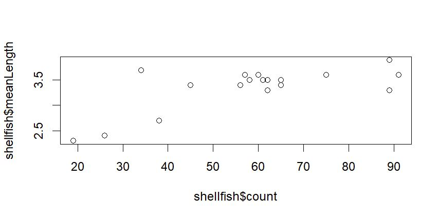
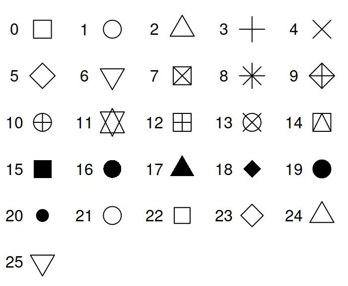
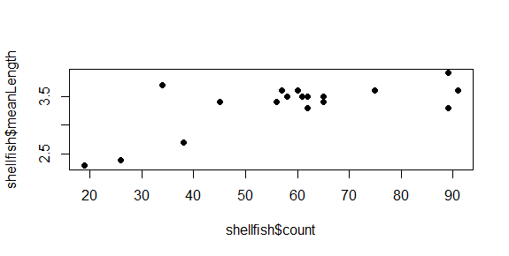
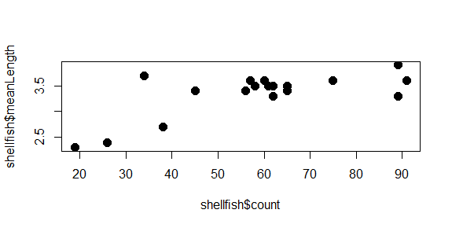
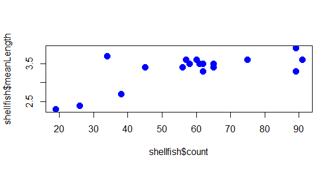
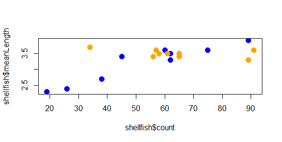
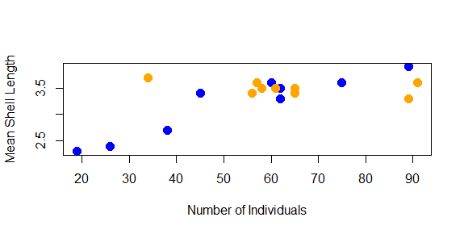
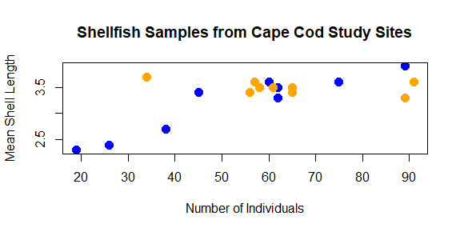
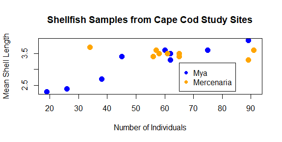
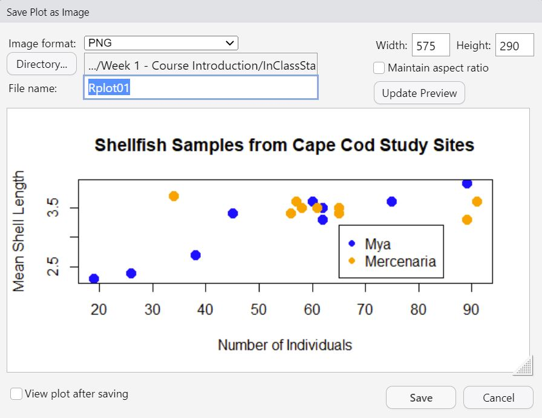

4 My first plot
So far, we’ve learned how to find our way around RStudio, looked at some of the basic concepts of working with data in R, and we’ve built a first dataset out of vectors. But we’ve left out one of R’s primary attractions: the ease and control it provides over visualizing data. To wrap up this lab, we’re going to plot the data we created. We already learned the plot command earlier when we were making histograms. This time, rather than plotting the frequency as a single variable, we’re going to plot two variables: shellfish counts and average lengths for each site.
plot(shellfish$count,shellfish$meanLength)

This is a scatterplot, which plots points on two axes. The bottom axis, or x axis, shows the count value for each site, while the left axis, or y axis, shows the mean length for each site.
In this case, we’re looking at all shellfish together, regardless of the genus to which it belongs. In the following sections, we’ll look at some additional arguments we might use to change the appearance of the plot.
Symbol
Oftentimes, we may want to use different symbols in a plot, either because an open circle isn’t particularly effective, or to differentiate between different elements in a plot. To change the symbol being used, the argument to be passed to a plot function here is pch, which stands for plotting character. This value is a single whole number which corresponds to a set of plotting symbols. Here are a few examples:

There are more symbols available, and there are also ways to add custom symbols, but we’ll cover symbols later in the course when we talk more about visualization. For now, let’s try using closed circles instead of open ones:
plot(shellfish$count,shellfish$meanLength,pch=16)

Symbol size
You can modify the size of the symbol using the cex argument. This argument will take any positive number, and scales to default value of 1. Numbers smaller than 1 make the symbol smaller, numbers larger than 1 make the symbol larger. Let’s say we want our symbols to be 50% larger. We can set cex to 1.5.
plot(shellfish$count,shellfish$meanLength,pch=16,cex=1.5)

Notice how we’re just adding arguments to the plot function? All of these arguments are optional, so if they aren’t entered, some defaults (eg., size 1, open circles) are used.
One of the really nice features of R is that it keeps track of your history of command line inputs. By pressing the Up key on your keyboard while the cursor is active in the command line, it will let you go back through the history. This can be really helpful if you want to modify a piece of code you wrote recently. Give it a try in the next section!
Color
We can change the color of the circles used in the scatter plot by adding a col argument to the plot function. Let’s start by turning all of them blue:
plot(shellfish$count,shellfish$meanLength,pch=16,cex=1.5,col="blue")
The plot now has a bit of color:

You may have noted also that RStudio highlights the text “blue” in blue: there are a number of character strings that R can interpret as colors, as well as hexidecimal numbers and a few other schemes as well. You can find a good overview of these here.
But what if we wanted to use color to give us some additional information? For example, what if we wanted a different color used for each genera we recorded? In this case, we would need to give R a vector that had a color value to correspond with each case. There are a few ways to do this, but since we know that our shellfish data lists the 9 Mya counts first and the 9 Mercenaria counts second, we can just use rep to create a vector of 9 “blue” and 9 “orange”:
shellfishColors<-c(rep("blue",9),rep("orange",9))
We could add this to our dataframe, but it isn’t really data about shellfish, only data we use for plotting purposes, so we’ll keep it as a separate vector. As long as it is the same length as each column (18), R can interpret it as corresponding to those values. So we just replace “blue” with shellfishColors:
plot(shellfish$count,shellfish$meanLength,pch=16,cex=1.5,col=shellfishColors)
And now the plot looks like this:

The color helps show a pattern in the data. One genus (Mya) seems to be smaller in places with fewer counts and larger in places with higher counts, while the other (Mercenaria) doesn’t seem to have this relationship. This helps illustrate why visualization is important: it helps us to quickly identify patterns in the data that may not be obvious just by looking at a table.
Axis labels and titles
Right now, the labels on our x and y axes are just the column names we gave to the plot function. We can override these using the xlab and ylab arguments, which take a character string:
plot(shellfish$count,shellfish$meanLength,pch=16,cex=1.5,col=shellfishColors,xlab="Number of Individuals",ylab="Mean Shell Length")

We might also want to add a title to our plot. This is done with the main argument:
plot(shellfish\$count,shellfish\$meanLength,pch=16,cex=1.5,col=shellfishColors,xlab="Number of Individuals",ylab="Mean Shell Length",main="Shellfish Samples from Cape Cod Study Sites")

As you can see, with some functions the number of arguments can get quite long.
Add a legend
Finally, we should probably add a legend to our plot so we know what color corresponds with what genera. We can’t do this with an argument to plot; instead, legend has it’s own function.
legend(65,3.2,legend=c("Mya","Mercenaria"),pch=16,col=c("blue","orange"))
The first two number arguments tell R where to place the legend, using the values on the x and y axes to correspond with the position of the top left corner of the legend. Next, we tell it what the different colored symbols indicate using a vector with each type in it: Mya and Mercenaria.

Now that you’ve seen how we add the different arguments to the plot function, you can vary the values to make it look differently. Try changing the different aspects of the plot to give it a different look. Some things you might do to really challenge your R skills would be:
Using different symbols for the two genera
Changing the location of the legend, making sure that it doesn’t cover any of your points
Plotting the size of the symbols based on the mean length of shellfish (hint: you may want create a vector from these values and subtract 1 from each value so they’ll fit better)
Saving your plot
As a last step, we can export the plot so we can use it in a report, a poster, a website: anywhere that someone might use visualizations to tell a story with data. There are ways to do this from the command line that we’ll learn later. For now, just click the Export button in the Output pane just above the plot, and select . A window like this should come up:

This will let you choose where you want to save it within your file system (something we’ll be discussing more in an upcoming lecture and lab).